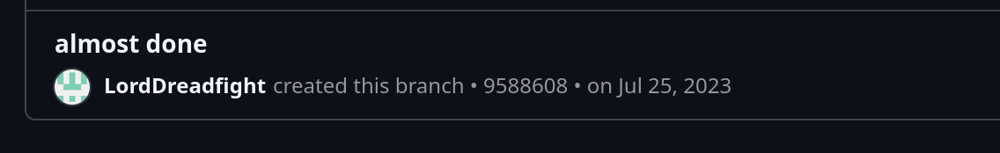

It took a long time... But now it's finally done. My website, according to the GitHub main branch, has been in development since July 25, 2023—over a year in the making.

After more than a year of intensive work, it's finally here:
The first beta version of my website is online!
It has been an exciting journey full of ups and downs, with jQuery errors, htaccess errors, and mysterious bugs that made me tear my website apart and stitch it back together.
Of course, the website isn't perfect yet, and over the next few weeks and months, there will be plenty of changes, especially in terms of the graphical user interface (GUI).
I’m committed to continuously improving the design and user experience. It's important to me that the site not only functions well but is also visually appealing, and I'm excited to implement these updates step by step.
New articles will be appearing regularly, depending on how much time I find.
Whether you're interested in in-depth analysis or entertaining stories, I'll do my best to keep the site lively and engaging.
Planned content includes tutorials, how-to guides on fixing things, and maaaybe some politics, particularly in the form of “Right to Repair.”
Your feedback is incredibly important to me because it's the only way the site can get better.
So don't hesitate to share your thoughts, ideas, or suggestions with me (for Discord info, see the About section below).
Together, we can develop this platform into a place you’ll want to visit often.
Best regards,
Beta β